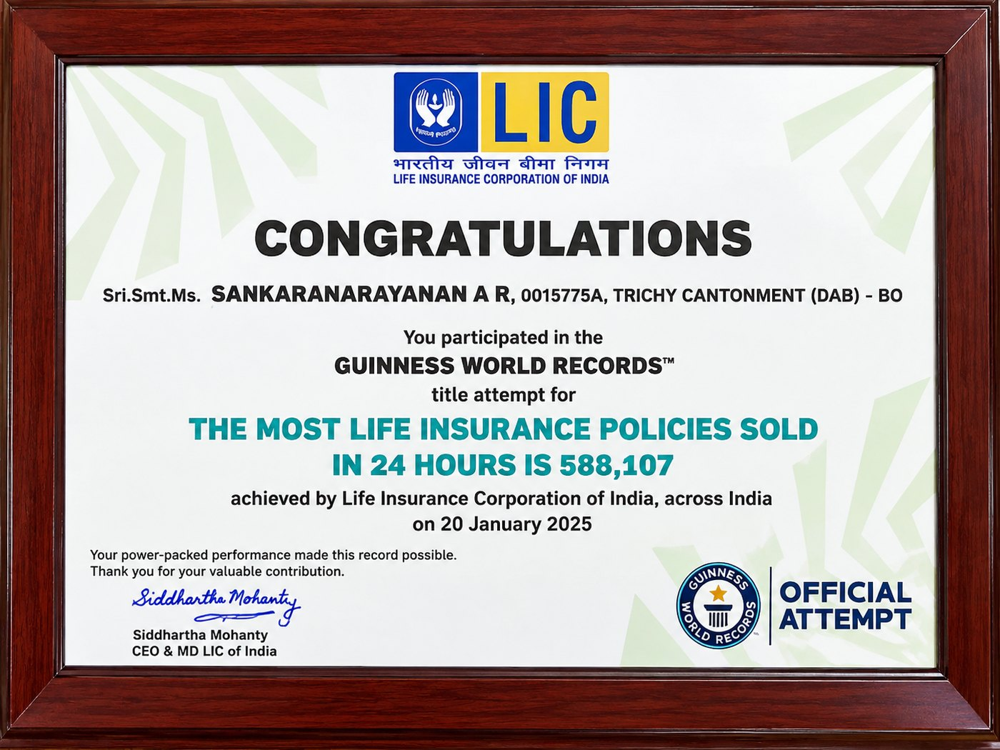
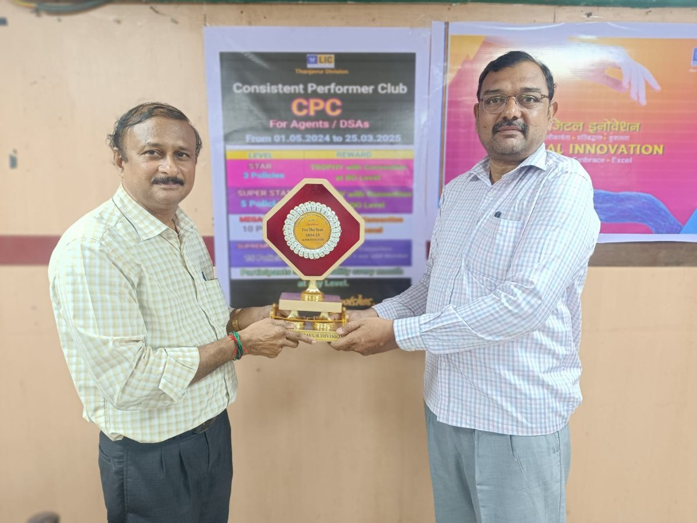
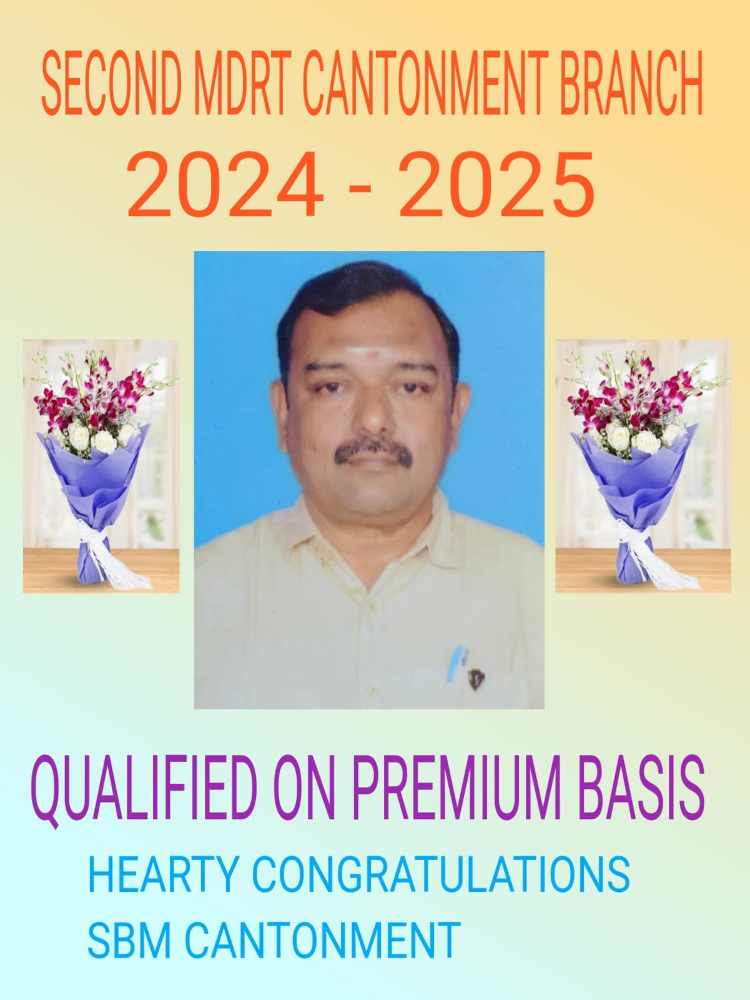
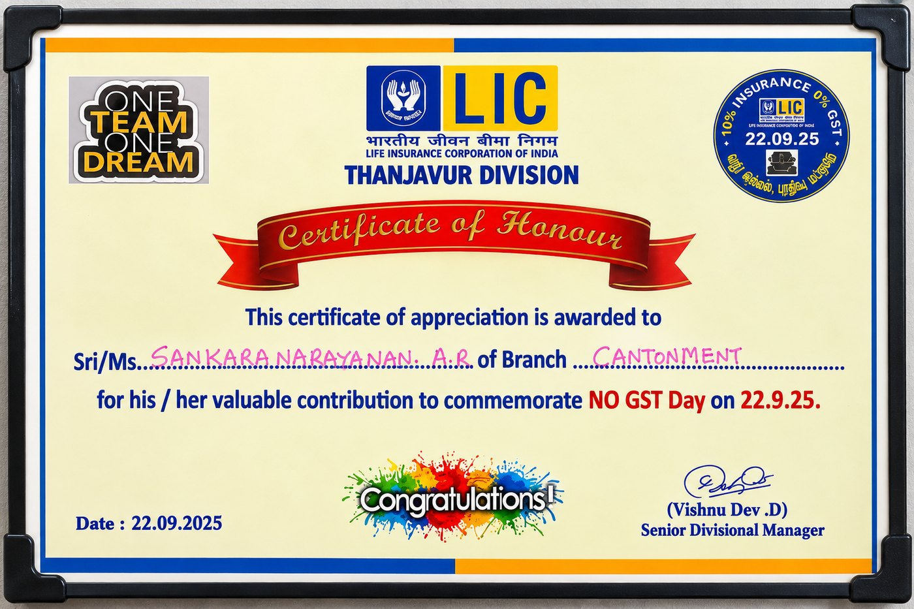
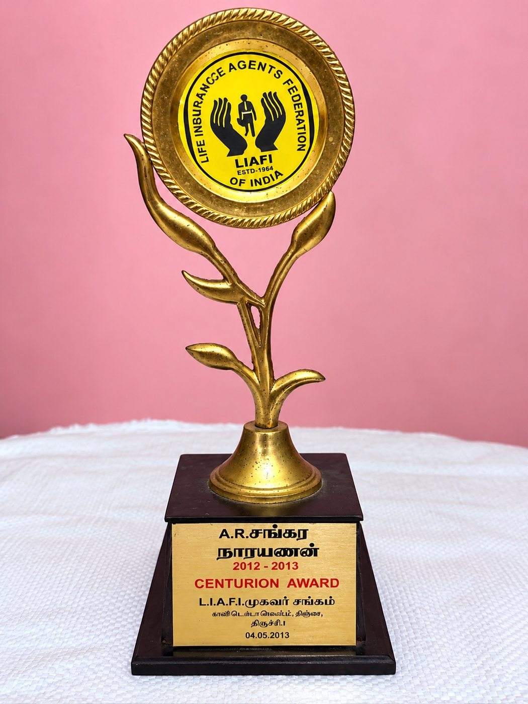
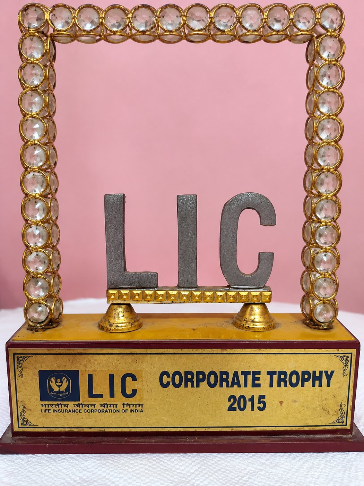

💎
New launchLIC’s Bima Platinum
Limited-premium plan with guaranteed additions, booster and regular income.
Available from 7 Sep 2026With 37 years of service, trusted LIC guidance for Trichy families – from protection and savings to retirement income and health cover, with personal service at every step.
“World Record Holder”Choose a company, then tap a plan for key features. LIC shows the six featured plans first – open the full list any time.
Limited-premium plan with guaranteed additions, booster and regular income.
Available from 7 Sep 2026Pure-protection plan that secures your family if the worst happens.
Available from 7 Sep 2026Guaranteed lifelong annuity income for retirement.
Available from 19 Oct 2026Fixed lump-sum payout on diagnosis of specified early or major-stage cancer.
Available from 19 Oct 2026Fixed-benefit health cover for the whole family.
Available from 19 Oct 2026Lifelong cover to age 100 with a guaranteed annual income of 8% after premiums end.
Plan 745Plans from LIC, LIC Housing Finance, National Insurance and Star Health Insurance – ask me about pension, unit-linked and other plans too. Official LIC list: licindia.in/insurance-plan
I’m A.R.Sankaranarayanan, a Senior Insurance Advisor with LIC at the Cantonment Branch, Trichy. My approach is simple: understand your family’s needs, explain every plan clearly, and stay with you for the life of the policy.
Keep your policy up to date without the running around.
Tap a photo to view it full size.






A few words from clients in Trichy, Chennai, Tirunelveli, Thanjavur and abroad.
Quick answers about LIC plans and services in Trichy.
A.R.Sankaranarayanan is a Senior Insurance Advisor with LIC at the Cantonment Branch, Trichy, with 37 years of service. He also assists customers with Star Health Insurance, National Insurance and LIC Housing Finance, and is an MDRT member and CPC Super Star Level qualifier for 2024-25.
LIC’s Bima Platinum and Jeevan Raksha became available from 7 September 2026. New Jeevan Dhara-II, the New Cancer Cover plan and Health Shield became available from 19 October 2026. Details of each are on this website.
I help with new policy login, policy renewal service, change of address, change of nominee, premium mode alterations, mobile, e-mail and net-banking updates, and claim-related services.
Yes. Apart from LIC’s health plans such as Health Shield and the New Cancer Cover, I can assist with Star Health Insurance and National Insurance health policies.
The right plan depends on your age, income, goals and responsibilities. Call or WhatsApp me and I will explain suitable options, premiums and terms in simple words before you decide.
WhatsApp me on 94444 85728, call 95789 52056, or visit the Cantonment Branch office on Dindigul Road, Trichy – 620 001. My residence address is 18/8, South Street, Mannarapuram, Trichy – 620 020.
Call, WhatsApp or send an enquiry – I’ll get back to you personally.
Residence
Office